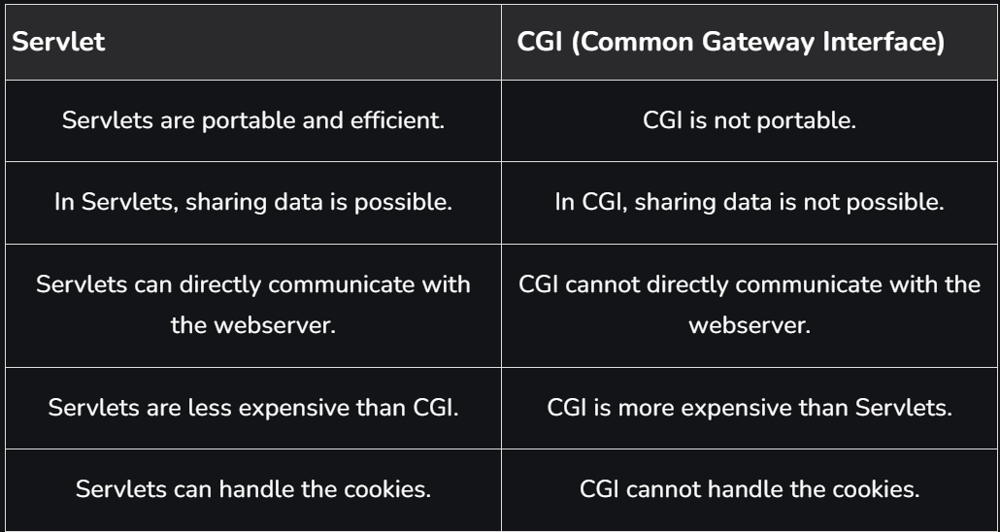

Welcome to the Advanced course of Java for placement!
During this course, you will learn the algorithms and object-oriented programming through the Java programming language. The course includes comprehensive materials and plenty of programming exercises - all of which are tested using our automatic testing service of MCQs and codes.
Anyone can join - but previous basic java programming knowledge is required.Unlike many programming courses found online, ours is completely unabridged; the course’s scope and material are identical to our CS1 Introduction to Programming and Advanced Programming courses.
This is the first course in our computer science learning track, and we use industry-grade tooling from day one. As such, the course is about programming in a real integrated development environment (IDE) instead of a browser or an educational IDE.
The course does not require separate registration. You can simply dive into the first part of the course found over here.
Course Contents The course is split up into 4 modules: Java Programming I and Java Programming II. Each course consists of seven parts, each with its own exercise set. Completing a single part takes approximately 5-20 hours, and we recommend reserving at least 10 hours per part, depending on prior skills with computers.Execution of Servlets basically involves six basic steps:
Now let us do discuss eccentric point that why do we need For Server-Side extensions?
The server-side extensions are nothing but the technologies that are used to create dynamic Web pages. Actually, to provide the facility of dynamic Web pages, Web pages need a container or Web server. To meet this requirement, independent Web server providers offer some proprietary solutions in the form of APIs (Application Programming Interface).
These APIs allow us to build programs that can run with a Web server. In this case, Java Servlet is also one of the component APIs of Java Platform Enterprise Edition (nowadays known as – ‘Jakarta EE’) which sets standards for creating dynamic Web applications in Java.
Before learning about something, it’s important to know the need for that something, it’s not like that this is the only technology available for creating dynamic Web pages. The Servlet technology is similar to other Web server extensions such as Common Gateway Interface (CGI) scripts and Hypertext Preprocessor (PHP). However, Java Servlets are more acceptable since they solve the limitations of CGI such as low performance and low degree scalability.
What is CGI?CGI is actually an external application that is written by using any of the programming languages like C or C++ and this is responsible for processing client requests and generating dynamic content. In CGI application, when a client makes a request to access dynamic Web pages, the Web server performs the following operations:
So, in CGI server has to create and destroy the process for every request. It’s easy to understand that this approach is applicable for handling few clients but as the number of clients increases, the workload on the server increases and so the time is taken to process requests increases.
Difference between Servlet and CGI
 Servlets API’s: Servlets are built from two packages: javax.servlet(Basic) javax.servlet.http(Advance) Various classes and interfaces present in these packages are: Component Type Package Servlet Interface javax.servlet.* ServletRequest Interface javax.servlet.* ServletResponse Interface javax.servlet.* GenericServlet Class javax.servlet.* HttpServlet Class javax.servlet.http.* HttpServletRequest Interface javax.servlet.http.* HttpServletResponse Interface javax.servlet.http.* Filter Interface javax.servlet.* ServletConfig Interface javax.servlet.* Advantages of a Java Servlet Servlet is faster than CGI as it doesn’t involve the creation of a new process for every new request received. Servlets, as written in Java, are platform independent. Removes the overhead of creating a new process for each request as Servlet doesn’t run in a separate process. There is only a single instance that handles all requests concurrently. This also saves the memory and allows a Servlet to easily manage the client state. It is a server-side component, so Servlet inherits the security provided by the Web server. The API designed for Java Servlet automatically acquires the advantages of the Java platforms such as platform-independent and portability. In addition, it obviously can use the wide range of APIs created on Java platforms such as JDBC to access the database. Many Web servers that are suitable for personal use or low-traffic websites are offered for free or at extremely cheap costs eg. Java servlet. However, the majority of commercial-grade Web servers are rather expensive, with the notable exception of Apache, which is free. The Servlet Container Servlet container, also known as Servlet engine, is an integrated set of objects that provide a run time environment for Java Servlet components. In simple words, it is a system that manages Java Servlet components on top of the Web server to handle the Web client requests. Services provided by the Servlet container: Network Services: Loads a Servlet class. The loading may be from a local file system, a remote file system or other network services. The Servlet container provides the network services over which the request and response are sent. Decode and Encode MIME-based messages: Provides the service of decoding and encoding MIME-based messages. Manage Servlet container: Manages the lifecycle of a Servlet. Resource management Manages the static and dynamic resources, such as HTML files, Servlets, and JSP pages. Security Service: Handles authorization and authentication of resource access. Session Management: Maintains a session by appending a session ID to the URL path. Conclusion Java Servlets are crucial components for defining business logic and handling complex web requests. These components promote the dynamic development of a web site and has a lot of potential to change the application dynamics. Here are some of the key features we learn in this article: Java Servlets aids in the development of server-side application development and provide a way to deal with dynamic content to build robust and interactive websites. As soon as the request reaches the web server, a servlet instance is initialized using init() method, and the HTTP request depending on its type can be handled by doGet() or doPost() methods. Servlets make our web application more responsive and efficient as it doesn’t create and destroy a process every time a request is received.